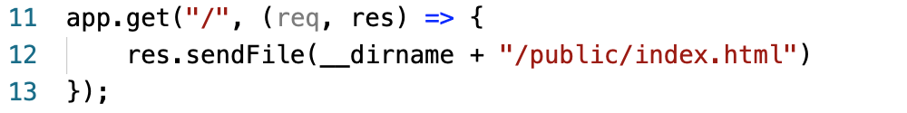
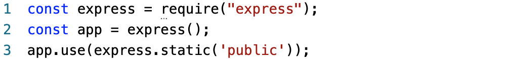
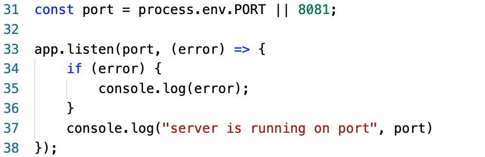
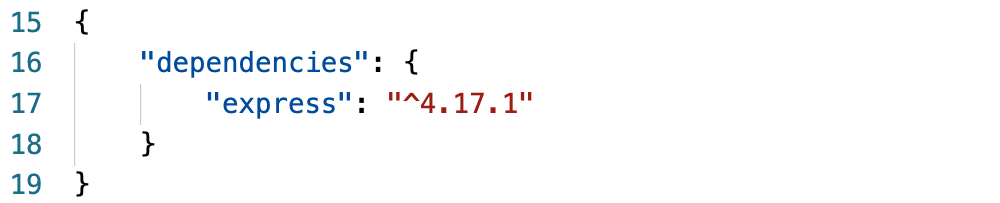

Code Snippets
Our most used method so far has been the “get” method:
Get methods are used by clients to request a server for some resource. “req” is data send from the client and “res” will be the resource that the server sends to the client.
The get method takes two arguments. Det first one being the endpoint (what we have to type in the url to get to that endpoint) and the second a callback function, which will be used to send response to the client requesting.
To use the “get” method, the express module has to be required and attached to a variable.
Another variable, typically called “app”, calls the express-function and puts an express application inside the variable. (creates object of express module)
app.use makes body/json parser available. Now the methods in app.js can use the json code inside the recieved request bodies.
the “listen”-method is what starts the server. (therefor, listen can be a confusing name).
It is good coding standard to have this message as the last in the file.
If you declare a port in the start command it will use that port, otherwise due to the “||”, 8081 will be used as the port.
If you do not include “|| 8081” and try to start to server without writing a port number before "node app.js”, the port would be undefined and the server will not start.
The Package.json file can be used for declaring which dependencies should be installed.
This example shows the code needed for installing express.
Here “dependencies” is the Key and the value is an object that will contain the dependencies.
Inside the object is a key “express” is declared and the value “4.17.1 ” is the version.